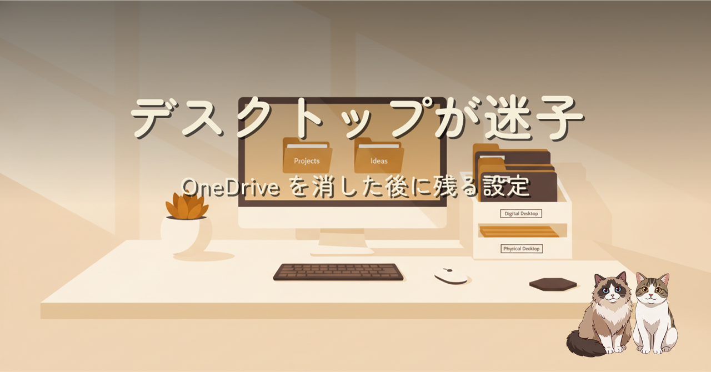
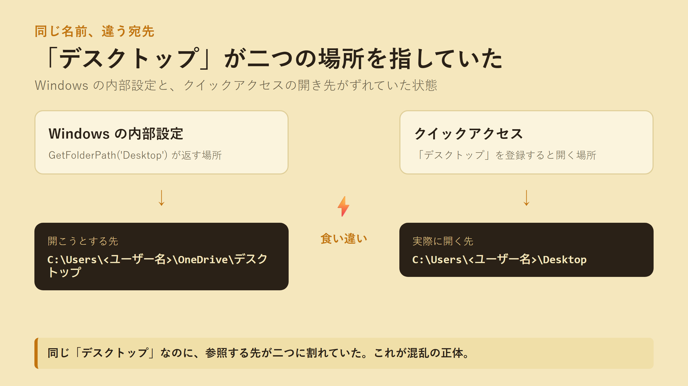
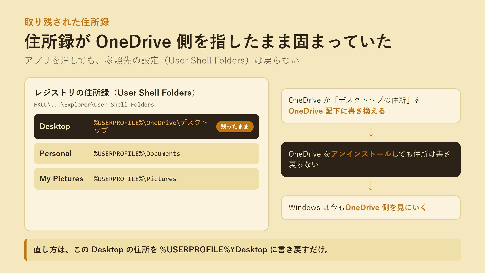

Windows 11 で OneDrive をアンインストールした後、クイックアクセスに登録した「デスクトップ」が別のフォルダーを開く二重状態に。原因は Known Folder（既知フォルダー）の設定が OneDrive 側を指したまま残っていたことでした。レジストリ 1 行で直した切り分けの記録です。
クイックアクセスに「デスクトップ」を登録すると、いま使っている OneDrive 配下のデスクトップではなく、プロファイル直下の Desktop が開いてしまう。[Environment]::GetFolderPath('Desktop') は OneDrive 側を返すのに、クイックアクセスは別の場所を開く。同じ「デスクトップ」という名前が、参照する先で食い違っている状態でした。

Windows の内部設定と、クイックアクセスの開き先が別々の場所を指していた。
犯人は OneDrive アプリではなく、取り残された設定でした。OneDrive はバックアップを有効にすると、デスクトップの場所を保持する Known Folder（User Shell Folders というレジストリ）を OneDrive 配下に書き換えます。アプリを消してもこの書き換えは戻らず、参照先の住所だけが OneDrive のまま残る。直し方は、その住所を %USERPROFILE%\Desktop に書き戻し、エクスプローラーを再起動するだけでした。

住所録（User Shell Folders）の「デスクトップ」欄が OneDrive 配下を指したまま固まっていた。